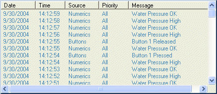

The KineticaRT Message components provide a way of generating, handling, logging and displaying text messages for the user.
There are several message components:

The Message Display component connects to a channel and displays the value of that channel in a listbox. Whenever the channel updates, it adds a line to its listbox showing the new value. Normally it is connected to a channel containing Messages.
A Message is an object with the base class Value similar to the Text, Boolean and Double values. It can be stored in channels, displayed like any other value and it contains The following properties:
The Message Event component connects to a channel and generates a Message whenever the Boolean state of that channel changes. The text of the message is defined by the Text and ReturnText properties.
The Threshold component connects to a channel and generates a Message whenever the value of that channel passes a given threshold value. The text of the message is defined by the Text and ReturnText properties.
The Recorder component connects to a channel and generates a message whenever the value of that channel changes. The text of the message is the new value of the channel.
The Sound component connects to a channel containing messages and plays a sound whenever a new message is received. You can restrict the sound to only play messages at given priorities.
The sounds can either be system sounds or sounds from .wav files.
The TextLog component connects to a channel containing messages and whenever a new message is recieved, it is written to a text file.
The Voice component connects to a channel containing messages and whenever a new message is received, it reads it out using speech. You can restrict the Voice to only read messages at given priorities.
If there is more than one voice installed on your computer then the voice used by the Voice component can be specifed and you can have different voices for differenent priority messages or messages from different sources.